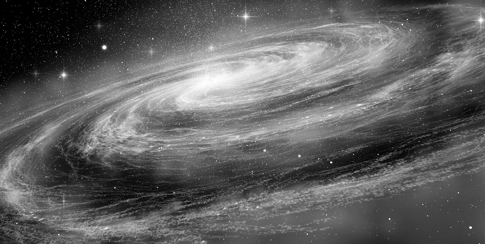

CINTURÃO DE FOTONS
Imagem representada em 2012.
O sistema solar gira em torno de Alcione, estrela central da constelação de Plêiades que está a 500 anos-luz da Terra. Esta foi a conclusão dos astrônomos Freidrich Wilhelm Bessel, Paul Otto Hesse, José Comas Solá e Edmund Halley, depois de estudos e cálculos minuciosos. Nosso Sol é, portanto, a oitava estrela da constelação - localizada a aproximadamente 28 graus de Touro - e leva 26 mil anos para completar uma órbita ao redor de Alcione, movimento terrestre também conhecido como Precessão dos Equinócios.

A divisão desta órbita por doze resulta em 2.160, tempo de duração de cada era "astrológica" (Era de Peixes, de Aquário, etc). Descobriu-se também que Alcione tem à sua volta um gigantesco anel, ou disco de radiação, em posição transversal ao plano das órbitas de seus sistemas (incluindo o nosso), que foi chamado de Cinturão de Fótons. Um fóton consiste na decomposição ou divisão do elétron, sendo a mais ínfima partícula de energia eletromagnética, algo que ainda se desconhece na Terra. Detectado pela primeira vez em 1961, através de satélites, a descoberta do cinturão de fótons marca o início de uma expansão de consciência além da terceira dimensão. A ida do homem à Lua nos anos 60 simbolizou esta expansão, já que antes das viagens interplanetárias era impossível perceber o cinturão.
A cada dez mil anos o Sistema Solar penetra por dois mil anos no anel de fótons, ficando mais próximo de Alcione. A última vez que a Terra passou por ele foi durante a "Era de Leão", há cerca de doze mil anos. Na Era de Aquário, que está se iniciando, ficaremos outros dois mil anos dentro deste disco de radiação. Todas as moléculas e átomos de nosso planeta passam por uma transformação sob a influência dos fótons, precisando se readaptar a novos parâmetros. A excitação molecular cria um tipo de luz constante, permanente, que não é quente, uma luz sem temperatura, que não produz sombra ou escuridão. Talvez por isso os hinduístas chamem de "Era da Luz" os tempos que estão por vir...
Desde 1972, o Sistema Solar vem entrando no cinturão de fótons e em 1998 a sua metade já estava dentro dele. A Terra começou a penetrá-lo em 1987 e ficou gradativamente avançando, até final de 2012 que completaria assim um ciclo de 104.000 anos de acordo com a cosmologia maia e asteca.
Humbatz Men, autor de "Los Calendários", fala sobre a vindoura "Idade Luz" nesta fase e Bárbara Marciniak, autora de "Mensageiros do Amanhecer", bem como a astróloga Bárbara H. Clow que escreveu "A Agenda Pleiadiana", receberam ambas várias canalizações sobre o assunto e falam sobre as transformações que estão ocorrendo em nosso planeta e nas preparações tanto física como psíquicas que precisamos nos submeter para realizarmos uma mudança dimensional.
Desde a década de oitenta, quando a Terra começou a entrar no Cinturão de Fótons, estamos nos sintonizando com a quarta dimensão e nos preparando para receber a radiação de Alcione, estrela de quinta dimensão, zona arquetípica de sentimentos e sonhos, onde é possível o contacto com planos mais elevados do Universo. A quarta dimensão é emocional e não física.
As idéias nela geradas influenciam e detonam os acontecimentos na terceira dimensão, plano da materialização. A esfera quadri-dimensional é regida pelas energias planetárias de nosso sistema solar, daí o trânsito pelas 'casas' dos vários planetas afectarem positiva ou negativamente nossa personalidade humana segundo a Astrologia.
Para realizar esta expansão de consciência é preciso fazer uma limpeza, tanto no corpo físico como no emocional, e transmutar os elementais da segunda dimensão a nós agregados, chamados de "miasmas" responsáveis pelas doenças em nosso organismo. Os 'miasmas' são compostos de massas etéricas que carregam memórias genéticas ou de vidas passadas que ficaram incrustados em nós e estão sendo intensamente activados pelo Cinturão de Fótons. Os pensamentos negativos e os estados de turbulência, como o da raiva, desejos de vingança, etc., também geram miasmas que provocam bloqueios energéticos em nosso organismo.
A alimentação vegetariana, massagem, acupuntura, homeopatia, florais, meditação, yoga, o tai-chi, algumas danças, etc, são técnicas que ajudam a liberar energias que mexem com o corpo subtil e abrem os canais de comunicação com outros planos universais. As conexões interdimensionais são feitas através de ressonância e para sobrevivermos na radiação fotônica temos que nos afinar a um novo campo vibratório. Por isso é importante ter uma alimentação sã e natural, isenta de cadáveres de animais ou de elementos químicos prejudiciais, livres de vícios perniciosos como as drogas, o tabaco e alcool e viver mais com a natureza, longe da poluição e negatividade mundana, dominando nossas próprias emoções e baixos sentimentos. Ter boas intenções é essencial, assim como estar em estado de alerta constante para perceber as sincronicidades e captar os sinais vindos de outras Esferas. Segundo a "Agenda Pleiadiana", de Bárbara Clow, o Cinturão de Fótons emana do Centro Galáctico. Alcione, o Sol Central das Plêiades, localiza-se eternamente dentro do Cinturão de Fótons, ativando sua luz espiralada por todo o Universo.
Dentro em breve estaremos imersos numa "Era de Luz" depois de um periodo longo de Trevas que os hindus chamam de 'Kali Yuga'. O Cinturão de Fótons inicia essa Era da Luz. Existem diversas formas da humanidade intensificar sua evolução, fazendo um trabalho de transformação e limpeza dos corpos subtis, mental e emocional, desenvolvendo a consciência universal, vivendo mais de acordo com nossa verdadeira condição, sendo íntegros e puros de coração, aumentando assim nosso estado vibratório ao nível da própria Terra que se está ajustando no seio do Cosmos.
Cada um deve fazer seu trabalho individual aliado ao coletivo da Humanidade. Os corpos que não transformarem suas energias não conseguirão ficar encarnados dentro da terceira dimensão, pois a quarta dimensão estará instalada. E todos nós redescobriremos a nossa multidimensionalidade e activaremos nossas capacidades adormecidas depois de longo tempo dentro da Noite Galáctica.
A inteligência da Terra será catalizada para toda a Via Láctea e todos estes acontecimentos foram registrados no Grande Calendário Maia que tem 26 mil anos de duração e terminou no solstício de inverno no dia 21 de dezembro de 2012, marcando a entrada definitiva da Terra dentro do Cinturão de Fótons por 2000 anos ininterruptos.
Isto nada tem a ver com o famigerado "fim do Mundo" que muitos apregoavam em fins de 2012, mas sim com mudanças e transformações planetárias necessárias que muitos observarão à medida que a Terra vai mudando seu eixo de posição. Os acontecimentos de "fim dos tempos" que Jesus profetizou se concretizarão na presente geração e se iniciará uma Nova Civilização da qual farão parte apenas os 'eleitos' ou 'escolhidos' que verdadeiramente se prepararam para suportar as novas energias da Terra que passará a uma outra dimensão.